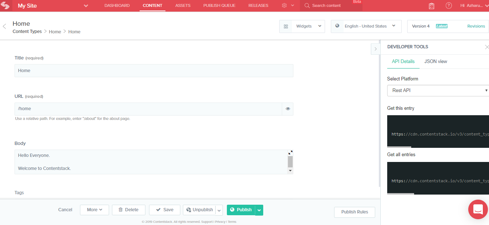
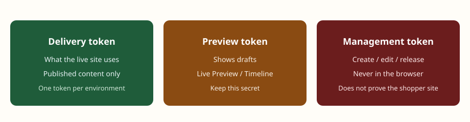
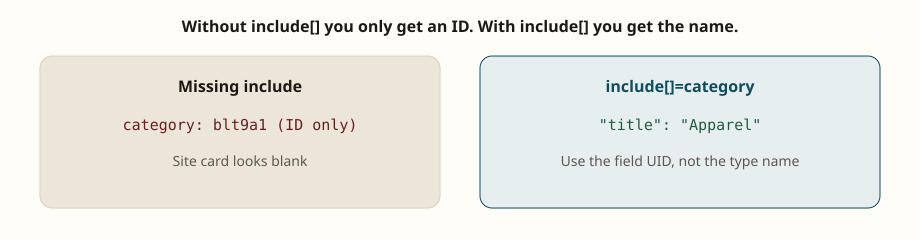
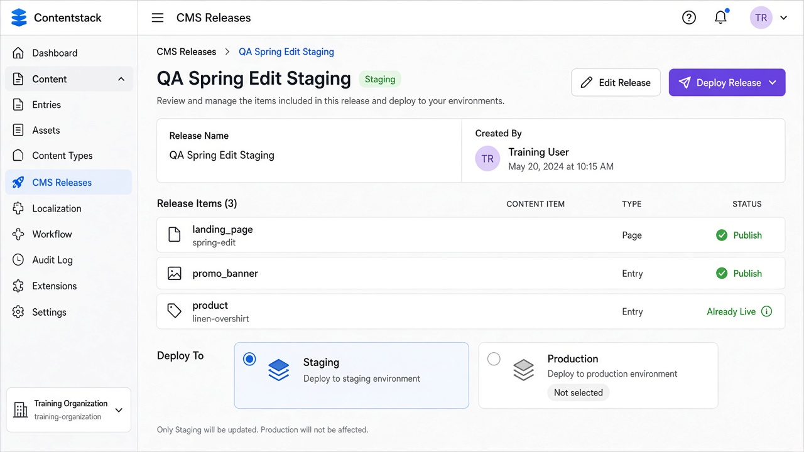
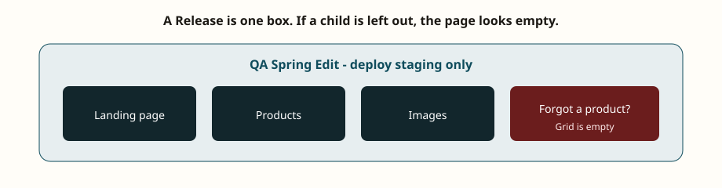

Module 03 — APIs, Preview, and Releases
Time: 3 hours
Goal: Pick the correct API for each QA check and prove publish, preview, and campaign releases.



---
1. Three APIs, three jobs
| API | Read/Write | Data state | Auth | QA use |
|---|---|---|---|---|
| REST CDA | Read | Published only, one environment | Delivery token | Contract and regression |
| GraphQL CDA | Read | Published only, one environment | Same delivery token | Field-level contract, over-fetch checks |
| Preview API | Read | Draft + Timeline + live preview hash | Preview token | Preview UAT, embargo Timeline |
| CMA | Read/Write | All states, admin operations | Management token | Setup, workflow, Releases — not runtime proof |
GraphQL CDA has no mutations. All writes go through CMA.
Never use CMA GET as proof that the website is correct. CMA can see drafts. The site uses CDA.
---
2. Hosts you will actually call
Region matters. Confirm the stack region in Settings. North America examples:
| Surface | Host pattern |
|---|---|
| REST CDA | https://cdn.contentstack.io/v3/... |
| REST CMA | https://api.contentstack.io/v3/... |
| GraphQL CDA | https://graphql.contentstack.com/stacks/{api_key}?environment={env} |
| GraphQL Preview | https://graphql-preview.contentstack.com/stacks/{api_key} |
EU / Azure / GCP stacks use different hosts (eu-, azure-na-, gcp-na-). Copy hosts from the stack’s API docs, not from memory.
Required CDA headers (REST):
api_key: <stack API key>
access_token: <environment delivery token>Common query parameters:
| Param | Why QA uses it |
|---|---|
environment | Must match the delivery token’s environment |
locale | en-us, fr-fr, de-de |
include[] | Resolve reference field UIDs |
include_all / include_all_depth | Full tree (watch payload size) |
include_embedded_items[] | Resolve JSON RTE embeds (value = RTE field UID) |
include_fallback | See fallback content when locale missing |
query | JSON filter (featured, taxonomy, slug) |
skip / limit | Pagination |
only[BASE][] / except[BASE][] | Field projection |
---
![CDA request with include[]=category — resolved title Apparel, not a UID](assets/screens/cs-cda-include.png)
3. REST CDA recipes for Horizon Market
Replace placeholders. Use staging token for UAT.
Get product by UID
GET https://cdn.contentstack.io/v3/content_types/product/entries/{ENTRY_UID}
?environment=staging
&locale=en-us
&include[]=category
&include[]=related_productsGet product by slug
GET https://cdn.contentstack.io/v3/content_types/product/entries
?environment=staging
&locale=en-us
&query={"slug":"linen-overshirt"}
&include[]=categoryList featured products
GET https://cdn.contentstack.io/v3/content_types/product/entries
?environment=staging
&query={"featured":true}
&include[]=categoryLanding page with RTE embeds
GET https://cdn.contentstack.io/v3/content_types/landing_page/entries
?environment=staging
&query={"slug":"spring-edit"}
&include_embedded_items[]=sections.rich_text.bodyIf modular block RTE field UID differs, copy it from the content type schema.
GraphQL equivalent (published only)
query StagingProduct($locale: String!) {
all_product(
locale: $locale
where: { slug: "linen-overshirt" }
) {
items {
title
slug
sku
price
categoryConnection { edges { node { title slug } } }
}
}
}Call GraphQL CDA with the same staging delivery token. If GraphQL returns the product and REST does not, you used different environments or locales — that is the defect, not “GraphQL is newer.”
---

4. Preview vs published (the #1 QA confusion)
| Check | API | Expected |
|---|---|---|
| Editor saved, not published | Preview: new copy | CDA: old published version or 404 |
| Published to staging only | Staging CDA: new | Production CDA: old |
| Live Preview iframe | Preview host + live_preview hash + preview token | Must not use delivery token |
| Timeline / scheduled future | Preview + preview_timestamp | CDA unchanged until schedule fires |
If Live Preview and the public staging site disagree, do not immediately blame the frontend. Confirm which API each surface calls.
---


5. Releases and scheduled publish
A Release is a named set of items, each with publish or unpublish, deployed together to one or more environments.
QA must verify:
- Every referenced entry and asset is in the Release or already live. Missing child = broken page after deploy.
- Entries are in a publishable workflow stage. Stuck in “In Review” can skip the item or fail the Release (depends on stack config).
- Locales included match the campaign (do not ship
en-usonly when the banner is localized). - After deploy: CDA on the target environment matches the Release contents; the other environment is untouched if not selected.
- Unpublish items in the same Release actually disappear from CDA.
- Failed or partial deploy is treated as a go-live incident, not a cosmetic bug.
Scheduled publish on a single entry is not the same as a Release. Test both if the project uses both.
CMA can create and deploy Releases. QA may watch a deploy; QA should not hold a management token in a personal snippet file.
---
6. Webhooks and “the site is stale”
Publish success in CMS ≠ users see new HTML.
Typical chain:
Publish event → webhook → CI rebuild or ISR revalidate → CDNQA records:
- Publish timestamp
- Webhook delivery status (Settings → Webhooks)
- Build/revalidate timestamp
- Browser cache / CDN TTL
A 5-minute delay with a working webhook is often expected. A 2-hour delay with failed 500 webhooks is a defect.
---
7. Live Preview and Visual Builder
Live Preview: draft rendered in the real app inside Contentstack.
Visual Builder: editors click page elements (data-cslp tags) and edit fields in context.
QA checks:
- Draft change appears in Preview without publish.
- Published site does not show the draft.
- Visual Builder outlines the correct field (wrong
data-cslp= editor edits the wrong content). - Locale switch in Preview matches
localesent to Preview API. - Preview does not leak management tokens to the browser network panel.
Studio / composition pages (if the project uses Contentstack Studio) are JSON layouts. Test against fixture entries tagged fixture=true so authors do not edit them.
---
8. Knowledge check
- Which API proves what shoppers see on production?
- REST returns
categoryas a UID string. What did the request omit? - Preview shows the new headline; staging site does not. Give the healthy explanation and the unhealthy one.
- A Release deploys but the hero image 404s. What was likely left out of the Release?
---